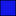

<!doctype html>
<html lang="en">
    <head>
        <meta charset="utf-8">
        <meta http-equiv="X-UA-Compatible" content="IE=edge">
        <meta name="viewport" content="initial-scale=1,user-scalable=no,maximum-scale=1,width=device-width">
        <meta name="mobile-web-app-capable" content="yes">
        <meta name="apple-mobile-web-app-capable" content="yes">
        <link rel="stylesheet" href="css/leaflet.css">
        <link rel="stylesheet" href="css/qgis2web.css">
        <link rel="stylesheet" href="css/leaflet-search.css">
        <link rel="stylesheet" href="css/leaflet-measure.css">
        <style>
        html, body, #map {
            width: 100%;
            height: 100%;
            padding: 0;
            margin: 0;
        }
        </style>
        <title></title>
    </head>
    <body>
        <div id="map">
        </div>
        <script src="js/qgis2web_expressions.js"></script>
        <script src="js/leaflet.js"></script>
        <script src="js/leaflet.rotatedMarker.js"></script>
        <script src="js/leaflet.pattern.js"></script>
        <script src="js/leaflet-hash.js"></script>
        <script src="js/Autolinker.min.js"></script>
        <script src="js/rbush.min.js"></script>
        <script src="js/labelgun.min.js"></script>
        <script src="js/labels.js"></script>
        <script src="js/leaflet-measure.js"></script>
        <script src="js/leaflet-search.js"></script>
        <script src="data/7mearrondissement_1.js"></script>
        <script src="data/Quartiers_2.js"></script>
        <script src="data/FleuveChari_3.js"></script>
        <script src="data/Routesprincipales_4.js"></script>
        <script src="data/Hopitaux_5.js"></script>
        <script>
        var map = L.map('map', {
            zoomControl:true, maxZoom:28, minZoom:1
        }).fitBounds([[12.0504497463,15.0599915966],[12.1234364433,15.1942277584]]);
        var hash = new L.Hash(map);
        map.attributionControl.addAttribution('<a href="https://github.com/tomchadwin/qgis2web" target="_blank">qgis2web</a>');
        var measureControl = new L.Control.Measure({
            primaryLengthUnit: 'meters',
            secondaryLengthUnit: 'kilometers',
            primaryAreaUnit: 'sqmeters',
            secondaryAreaUnit: 'hectares'
        });
        measureControl.addTo(map);
        var bounds_group = new L.featureGroup([]);
        var basemap0 = L.tileLayer('http://{s}.www.toolserver.org/tiles/bw-mapnik/{z}/{x}/{y}.png', {
            attribution: '&copy; <a href="http://openstreetmap.org">OpenStreetMap</a> contributors, <a href="http://creativecommons.org/licenses/by-sa/2.0/">CC-BY-SA</a>',
            maxZoom: 28
        });
        basemap0.addTo(map);
        function setBounds() {
        }
        var overlay_OSMStandard_0 = L.tileLayer('http://tile.openstreetmap.org/{z}/{x}/{y}.png', {
            opacity: 1.0
        });
        overlay_OSMStandard_0.addTo(map);
        map.addLayer(overlay_OSMStandard_0);
        function pop_7mearrondissement_1(feature, layer) {
            var popupContent = '<table>\
                    <tr>\
                        <td colspan="2">' + (feature.properties['Nom_Arr'] !== null ? Autolinker.link(String(feature.properties['Nom_Arr'])) : '') + '</td>\
                    </tr>\
                    <tr>\
                        <td colspan="2">' + (feature.properties['F_AREA'] !== null ? Autolinker.link(String(feature.properties['F_AREA'])) : '') + '</td>\
                    </tr>\
                    <tr>\
                        <td colspan="2">' + (feature.properties['wikipedia'] !== null ? Autolinker.link(String(feature.properties['wikipedia'])) : '') + '</td>\
                    </tr>\
                </table>';
            layer.bindPopup(popupContent, {maxHeight: 400});
        }

        function style_7mearrondissement_1_0() {
            return {
                pane: 'pane_7mearrondissement_1',
                opacity: 1,
                color: 'rgba(0,0,0,1.0)',
                dashArray: '',
                lineCap: 'butt',
                lineJoin: 'miter',
                weight: 4.0, 
                fill: true,
                fillOpacity: 1,
                fillColor: 'rgba(242,0,172,0.0)',
            }
        }
        map.createPane('pane_7mearrondissement_1');
        map.getPane('pane_7mearrondissement_1').style.zIndex = 401;
        map.getPane('pane_7mearrondissement_1').style['mix-blend-mode'] = 'normal';
        var layer_7mearrondissement_1 = new L.geoJson(json_7mearrondissement_1, {
            attribution: '<a href=""></a>',
            pane: 'pane_7mearrondissement_1',
            onEachFeature: pop_7mearrondissement_1,
            style: style_7mearrondissement_1_0,
        });
        bounds_group.addLayer(layer_7mearrondissement_1);
        map.addLayer(layer_7mearrondissement_1);
        function pop_Quartiers_2(feature, layer) {
            var popupContent = '<table>\
                    <tr>\
                        <td colspan="2">' + (feature.properties['NOM'] !== null ? Autolinker.link(String(feature.properties['NOM'])) : '') + '</td>\
                    </tr>\
                    <tr>\
                        <td colspan="2">' + (feature.properties['SPécIFI'] !== null ? Autolinker.link(String(feature.properties['SPécIFI'])) : '') + '</td>\
                    </tr>\
                    <tr>\
                        <td colspan="2">' + (feature.properties['wikipedia'] !== null ? Autolinker.link(String(feature.properties['wikipedia'])) : '') + '</td>\
                    </tr>\
                </table>';
            layer.bindPopup(popupContent, {maxHeight: 400});
        }

        function style_Quartiers_2_0() {
            return {
                pane: 'pane_Quartiers_2',
                opacity: 1,
                color: 'rgba(0,0,0,1.0)',
                dashArray: '',
                lineCap: 'butt',
                lineJoin: 'miter',
                weight: 1.0, 
                fill: true,
                fillOpacity: 1,
                fillColor: 'rgba(225,105,153,0.0)',
            }
        }
        map.createPane('pane_Quartiers_2');
        map.getPane('pane_Quartiers_2').style.zIndex = 402;
        map.getPane('pane_Quartiers_2').style['mix-blend-mode'] = 'normal';
        var layer_Quartiers_2 = new L.geoJson(json_Quartiers_2, {
            attribution: '<a href=""></a>',
            pane: 'pane_Quartiers_2',
            onEachFeature: pop_Quartiers_2,
            style: style_Quartiers_2_0,
        });
        bounds_group.addLayer(layer_Quartiers_2);
        map.addLayer(layer_Quartiers_2);
        function pop_FleuveChari_3(feature, layer) {
            var popupContent = '<table>\
                    <tr>\
                        <td colspan="2">' + (feature.properties['ID'] !== null ? Autolinker.link(String(feature.properties['ID'])) : '') + '</td>\
                    </tr>\
                    <tr>\
                        <td colspan="2">' + (feature.properties['Area'] !== null ? Autolinker.link(String(feature.properties['Area'])) : '') + '</td>\
                    </tr>\
                    <tr>\
                        <td colspan="2">' + (feature.properties['Nom'] !== null ? Autolinker.link(String(feature.properties['Nom'])) : '') + '</td>\
                    </tr>\
                    <tr>\
                        <td colspan="2">' + (feature.properties['wikipedia'] !== null ? Autolinker.link(String(feature.properties['wikipedia'])) : '') + '</td>\
                    </tr>\
                </table>';
            layer.bindPopup(popupContent, {maxHeight: 400});
        }

        function style_FleuveChari_3_0() {
            return {
                pane: 'pane_FleuveChari_3',
                opacity: 1,
                color: 'rgba(0,0,0,1.0)',
                dashArray: '',
                lineCap: 'butt',
                lineJoin: 'miter',
                weight: 1.0, 
                fill: true,
                fillOpacity: 1,
                fillColor: 'rgba(19,22,231,1.0)',
            }
        }
        map.createPane('pane_FleuveChari_3');
        map.getPane('pane_FleuveChari_3').style.zIndex = 403;
        map.getPane('pane_FleuveChari_3').style['mix-blend-mode'] = 'normal';
        var layer_FleuveChari_3 = new L.geoJson(json_FleuveChari_3, {
            attribution: '<a href=""></a>',
            pane: 'pane_FleuveChari_3',
            onEachFeature: pop_FleuveChari_3,
            style: style_FleuveChari_3_0,
        });
        bounds_group.addLayer(layer_FleuveChari_3);
        map.addLayer(layer_FleuveChari_3);
        function pop_Routesprincipales_4(feature, layer) {
            var popupContent = '<table>\
                    <tr>\
                        <td colspan="2">' + (feature.properties['Shape_Leng'] !== null ? Autolinker.link(String(feature.properties['Shape_Leng'])) : '') + '</td>\
                    </tr>\
                    <tr>\
                        <td colspan="2">' + (feature.properties['code'] !== null ? Autolinker.link(String(feature.properties['code'])) : '') + '</td>\
                    </tr>\
                    <tr>\
                        <td colspan="2">' + (feature.properties['Nom'] !== null ? Autolinker.link(String(feature.properties['Nom'])) : '') + '</td>\
                    </tr>\
                    <tr>\
                        <td colspan="2">' + (feature.properties['wikipedia'] !== null ? Autolinker.link(String(feature.properties['wikipedia'])) : '') + '</td>\
                    </tr>\
                </table>';
            layer.bindPopup(popupContent, {maxHeight: 400});
        }

        function style_Routesprincipales_4_0() {
            return {
                pane: 'pane_Routesprincipales_4',
                opacity: 1,
                color: 'rgba(250,7,8,1.0)',
                dashArray: '',
                lineCap: 'square',
                lineJoin: 'bevel',
                weight: 2.0,
                fillOpacity: 0,
            }
        }
        map.createPane('pane_Routesprincipales_4');
        map.getPane('pane_Routesprincipales_4').style.zIndex = 404;
        map.getPane('pane_Routesprincipales_4').style['mix-blend-mode'] = 'normal';
        var layer_Routesprincipales_4 = new L.geoJson(json_Routesprincipales_4, {
            attribution: '<a href=""></a>',
            pane: 'pane_Routesprincipales_4',
            onEachFeature: pop_Routesprincipales_4,
            style: style_Routesprincipales_4_0,
        });
        bounds_group.addLayer(layer_Routesprincipales_4);
        map.addLayer(layer_Routesprincipales_4);
        function pop_Hopitaux_5(feature, layer) {
            var popupContent = '<table>\
                    <tr>\
                        <td colspan="2">' + (feature.properties['id'] !== null ? Autolinker.link(String(feature.properties['id'])) : '') + '</td>\
                    </tr>\
                    <tr>\
                        <td colspan="2">' + (feature.properties['nom'] !== null ? Autolinker.link(String(feature.properties['nom'])) : '') + '</td>\
                    </tr>\
                    <tr>\
                        <td colspan="2">' + (feature.properties['coord'] !== null ? Autolinker.link(String(feature.properties['coord'])) : '') + '</td>\
                    </tr>\
                    <tr>\
                        <td colspan="2">' + (feature.properties['wikipedia'] !== null ? Autolinker.link(String(feature.properties['wikipedia'])) : '') + '</td>\
                    </tr>\
                    <tr>\
                        <td colspan="2">' + (feature.properties['type'] !== null ? Autolinker.link(String(feature.properties['type'])) : '') + '</td>\
                    </tr>\
                </table>';
            layer.bindPopup(popupContent, {maxHeight: 400});
        }

        function style_Hopitaux_5_0() {
            return {
                pane: 'pane_Hopitaux_5',
        rotationAngle: 0.0,
        rotationOrigin: 'center center',
        icon: L.icon({
            iconUrl: 'markers/health_hospital_emergency2.svg',
            iconSize: [26.6, 26.6]
        }),
            }
        }
        map.createPane('pane_Hopitaux_5');
        map.getPane('pane_Hopitaux_5').style.zIndex = 405;
        map.getPane('pane_Hopitaux_5').style['mix-blend-mode'] = 'normal';
        var layer_Hopitaux_5 = new L.geoJson(json_Hopitaux_5, {
            attribution: '<a href=""></a>',
            pane: 'pane_Hopitaux_5',
            onEachFeature: pop_Hopitaux_5,
            pointToLayer: function (feature, latlng) {
                var context = {
                    feature: feature,
                    variables: {}
                };
                return L.marker(latlng, style_Hopitaux_5_0(feature));
            },
        });
        bounds_group.addLayer(layer_Hopitaux_5);
        map.addLayer(layer_Hopitaux_5);
        var baseMaps = {};
        L.control.layers(baseMaps,{' Hopitaux': layer_Hopitaux_5,' Routes principales': layer_Routesprincipales_4,' FleuveChari': layer_FleuveChari_3,' Quartiers': layer_Quartiers_2,' 7éme arrondissement': layer_7mearrondissement_1,"OSM Standard": overlay_OSMStandard_0,}).addTo(map);
        map.on("zoomend", function(){

            if (map.hasLayer(layer_Quartiers_2)) {
                if (map.getZoom() <= 19 && map.getZoom() >= 5) {
                    layer_Quartiers_2.eachLayer(function (layer) {
                        layer.openTooltip();
                    });
                } else {
                    layer_Quartiers_2.eachLayer(function (layer) {
                        layer.closeTooltip();
                    });
                }
            }
        });
        setBounds();
        var i = 0;
        layer_Quartiers_2.eachLayer(function(layer) {
            var context = {
                feature: layer.feature,
                variables: {}
            };
            layer.bindTooltip((layer.feature.properties['NOM'] !== null?String('<div style="color: #000000; font-size: 8pt; font-family: \'MS Shell Dlg 2\', sans-serif;">' + layer.feature.properties['NOM']) + '</div>':''), {permanent: true, offset: [-0, -16], className: 'css_Quartiers_2'});
            labels.push(layer);
            totalMarkers += 1;
              layer.added = true;
              addLabel(layer, i);
              i++;
        });
            if (map.hasLayer(layer_Quartiers_2)) {
                if (map.getZoom() <= 19 && map.getZoom() >= 5) {
                    layer_Quartiers_2.eachLayer(function (layer) {
                        layer.openTooltip();
                    });
                } else {
                    layer_Quartiers_2.eachLayer(function (layer) {
                        layer.closeTooltip();
                    });
                }
            }
        map.addControl(new L.Control.Search({
            layer: layer_Hopitaux_5,
            initial: false,
            hideMarkerOnCollapse: true,
            propertyName: 'nom'}));
        resetLabels([layer_Quartiers_2]);
        map.on("zoomend", function(){
            resetLabels([layer_Quartiers_2]);
        });
        map.on("layeradd", function(){
            resetLabels([layer_Quartiers_2]);
        });
        map.on("layerremove", function(){
            resetLabels([layer_Quartiers_2]);
        });
        </script>
    </body>
</html>
